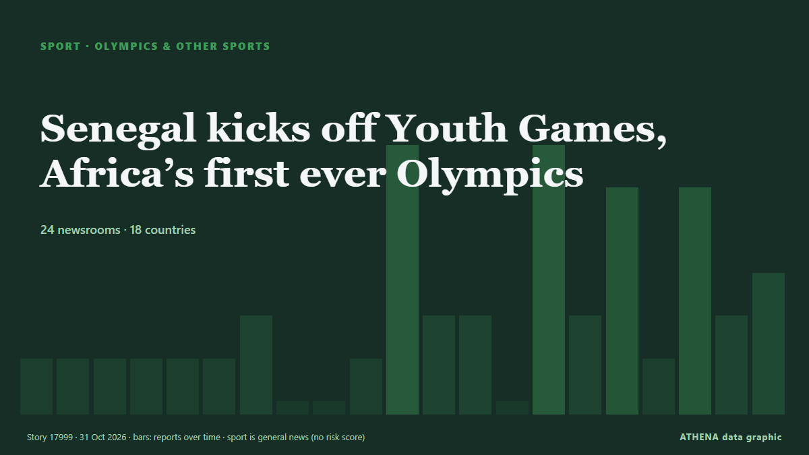

Senegal kicks off Youth Games, Africa’s first ever Olympics

Dakar is hosting around 2,665 young competitors aged 14 to 17 from around the world, who will compete in 25 sports and 153 medal events. von Free Malaysia Today
Unabhängig gemeldet von 24 Medien in 18 Ländern seit dem 21. Okt., zuerst von Africanews (English); die Berichterstattung breitet sich weiter aus. Sport und Kultur werden ohne Risikobewertung abgelegt. Die Konfidenz liegt bei 92 % (hoch): 24 Medien bestätigen es unabhängig, bei einer mittleren Verlässlichkeit der Quellen von 75 %. Wer berichtete: 6 Medien in Frankreich · France, 3 Medien in Nigeria, 3 Medien in Oman. Die Berichterstattung lief von 21. Okt. bis 31. Okt., über 240 Stunden.
Was sich geändert hat: 9 neue Berichte von 7 Redaktionen in den 24 Stunden bis 31. Okt..
Erste Schlagzeile: All you need to know about the Dakar 2026 Youth Olympics
Schlagzeilen werden auf Englisch angezeigt, wie veröffentlicht.
Auf einen Blick
Ausgewählt, bewertet und geschrieben nach der veröffentlichten Methodik von ATHENA. Kein Redakteur greift in einzelne Ereignisse ein. So entsteht ATHENA ›
| 21 Oct 06:05 UTC | 1 |
|---|---|
| 21 Oct 18:05 UTC | 1 |
| 22 Oct 06:05 UTC | 1 |
| 22 Oct 18:05 UTC | 1 |
| 23 Oct 06:05 UTC | 1 |
| 23 Oct 18:05 UTC | 1 |
| 24 Oct 06:05 UTC | 2 |
| 24 Oct 18:05 UTC | 0 |
| 25 Oct 06:05 UTC | 0 |
| 25 Oct 18:05 UTC | 1 |
| 26 Oct 06:05 UTC | 6 |
| 26 Oct 18:05 UTC | 2 |
| 27 Oct 06:05 UTC | 2 |
| 27 Oct 18:05 UTC | 0 |
| 28 Oct 06:05 UTC | 6 |
| 28 Oct 18:05 UTC | 2 |
| 29 Oct 06:05 UTC | 5 |
| 29 Oct 18:05 UTC | 1 |
| 30 Oct 06:05 UTC | 5 |
| 30 Oct 18:05 UTC | 2 |
| 31 Oct 06:05 UTC | 4 |
Warum diese Zahlen
Bedeutung
Risiko
Konfidenz
Die Berichterstattung – wer berichtete, und wann
Schlagzeile wie veröffentlicht · öffnet das Original- Africanews (English) · AFRSenegalese workers protest rising living costs ahead of three-day general strike
- RFI English · Frankreich · FranceSenegal unions press on with general strike days before Youth Olympics
- AllAfrica · AFRSenegal: General Strike Continues Amid Protests Against New Labour Laws
- Africanews (English) · AFRYoung Uganda-based refugees chase their Olympic dream in Senegal
- France 24 English · Frankreich · FranceOlympic fever grips Senegal as Dakar hosts Youth Olympic Games
- Punch · NigeriaTeam Nigeria step up 2026 Youth Olympics prep
- Radio Tamazuj · Südsudan · South SudanSouth Sudanese youth going to Dakar Olympics pledge peace
- MyJoyOnline · GhanaQatar supports Senegal’s preparations for Dakar 2026 Youth Olympic Games
- Oman Observer · OmanSenegal to host Youth Games, Africa's first ever Olympics
- Asharq Al-Awsat (English) · Saudi-Arabien · Saudi ArabiaSenegal to Host Youth Games, Africa's First Ever Olympics
- Tehran Times · IranCarrying Iran’s flag at Youth Olympics a great honor, Faraji says
- BBC News · Vereinigtes Königreich · United KingdomAll you need to know about the Dakar 2026 Youth Olympics
- Nile Post · UgandaAll you need to know about the Dakar 2026 Youth Olympics
- RFI English · Frankreich · FranceSenegal PM vows to address economic issues as 2026 Youth Olympics Games loom
- Africanews (English) · AFRDakar prepares to host the 2026, Youth Olympics Africa’s first Olympic event
- Express Tribune · PakistanSenegal to host Youth Games
- News of Bahrain · BahrainBahrain Name Four Athletes for Dakar Youth Olympics
- Africanews (English) · AFRIOC president arrives in Senegal ahead of the Youth Olympic Games
- Africanews (English) · AFRQatar sends 15 buses to Senegal ahead of Dakar 2026 Youth Olympics
- Premium Times · NigeriaYouth Olympics: Nigeria names 19 athletes for Dakar 2026
- DW English · Deutschland · GermanyAfrica's first Youth Olympics open in Senegal amid hope and scrutiny
- AllAfrica · AFRSenegal: Senegal's Youth Olympics' Welcome Should Include Everyone
- Greek City Times · Griechenland · GreeceFirst Greek Olympic Youth Team Departs For Youth Olympics
- Oman Observer · OmanOman athletes all set for Dakar 2026 Youth Olympic Games
- People Daily · Kenia · KenyaMediamax secures exclusive media rights for Dakar 2026 Youth Olympic Games in Kenya
- Punch · NigeriaNOC president Gumel backs Youth Olympics contingent
- News of Bahrain · BahrainBahrain Name Four Athletes for Dakar 2026 Youth Olympic Games
- France 24 English · Frankreich · FranceKenya's female athletes make their mark as Youth Olympic Games approach
- BelTA (English) — page reader · Belarus15:20 Belarus names seven athletes for Youth Olympics in Dakar Sport
- Oman Observer · OmanHamed targets strong debut at Dakar 2026 Youth Olympics
- CGTN (World) · ChinaAfrica Watch: Dakar 2026: Africa’s Olympic Moment?
- CNA (Channel NewsAsia) · Singapur · SingaporeAfrica ready for Olympic debut with Dakar Youth Games
- Free Malaysia Today · MalaysiaAfrica ready for Olympic debut with Dakar Youth Games
- RFI English · Frankreich · FranceEverything you need to know about the Youth Olympic Games in Senegal
- Xinhua (English) — page reader · ChinaXi's special envoy to attend opening ceremony of 4th Youth Olympic Games in Dakar
- France 24 English · Frankreich · FranceSenegal gears up for historic 2026 Youth Olympic Games in Dakar
- Africanews (English) · AFRSenegal gears up for a historic Dakar 2026 Youth Olympics
- CGTN (World) · ChinaAfrica ready for Olympic debut with Dakar Youth Games
- News of Bahrain · BahrainBahrain Send Four Athletes to Dakar 2026 Youth Olympic Games
- Free Malaysia Today · MalaysiaSenegal kicks off Youth Games, Africa’s first ever Olympics